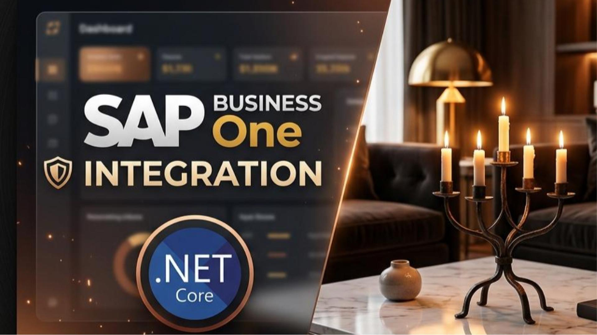
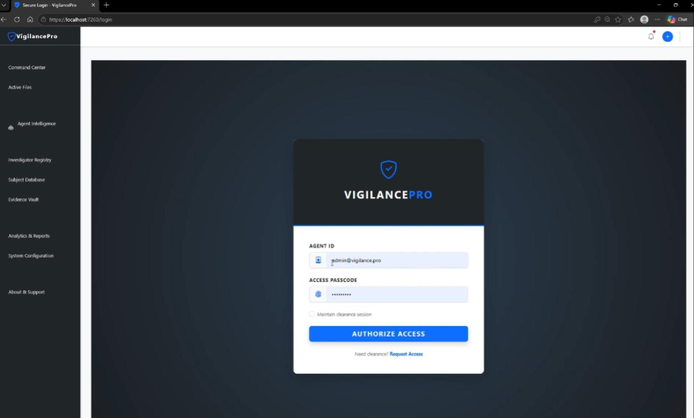

Featured Client Outcomes
Real examples of projects I have built, showing the business challenge and the engineering solutions used to deliver results.

🏺 Aura Home: Next-Gen E-Commerce & SAP B1 Integration
The Challenge: Connecting elegant, responsive B2C/B2B storefronts to complex backend enterprise ERP systems without sacrificing web performance.
The Solution: Built a premium, high-speed Single Page Application using ASP.NET Core API (.NET 10) and vanilla JS. Integrated with a mock SAP B1 Service Layer to sync live inventory and orders dynamically upon checkout, featuring automated B2B bulk invoicing (Net 30) and an Luhn credit card validation engine.
💳 B2B Customer Self-Service Portal & SAP B1 Sync
The Challenge: A wholesale business wasted significant admin hours manually dealing with client inquiries regarding open invoices, custom contract pricing sheets, and ordering issues.
The Solution: Architected and built an agent-based customer self-service portal. Decoupled agents (Auth, Catalog, Order, Billing) handle tasks like fetching custom price list contracts based on B2B CardCode, credit limit validation, and automating Stripe payments that generate Incoming Payment entries to close paid A/R Invoices directly in SAP B1.

🔒 Surveillance Tracking & Workflow Auditor
The Challenge: An organization struggled with manual surveillance auditing, causing long compliance reviews, workflow delays, and missing records.
The Solution: Built a robust web application using Blazor WebAssembly (.NET 8) implementing a state-machine workflow (Draft, Active, Inactive), role-based permissions, and parameter verification.

🏥 MedTRACK Subscription & Health Records Portal
The Challenge: A medical platform required secure patient health record sharing linked to automated monthly recurring billing.
The Solution: Constructed a secure, high-availability ASP.NET Core 6 system integrated with the PayPal Subscription API for processing transactions and custom cloud storage modules.

🌐 VigilancePro Secure Intelligence Vault
The Challenge: Private investigators needed a highly secure evidence vault and case tracker that isolates sensitive client files.
The Solution: Built a modular monolithic Blazor Server application with strict role-based access control (RBAC), customized database encryption, and active logs.

🛍️ Enterprise-Grade Blazor Storefront & Identity Engine
The Challenge: An online merchant required a rapid, SEO-optimized product catalog interface coupled with secure user profiles and checkouts.
The Solution: Designed a client-side Blazor WebAssembly application utilizing .NET 9 and C# 13, leveraging ASP.NET Core Identity for user management and high-speed local caching.
🤖 AI Support Agents & SaaS Automation Platforms
The Challenge: Businesses waste countless hours on recurring client queries and manual spreadsheet data synchronization.
The Solution: Built custom GPT-powered chatbots with vector database support (RAG), integrated them with Node.js/Python microservices, and converted design layouts (Figma) to clean React frontends.